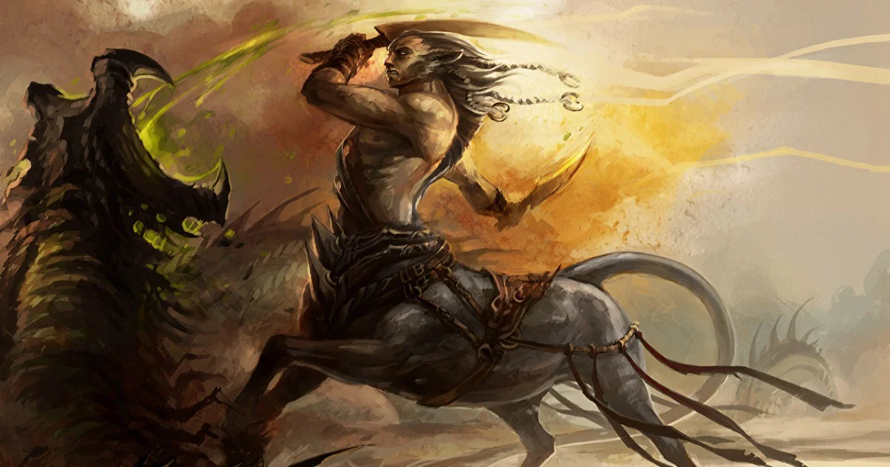
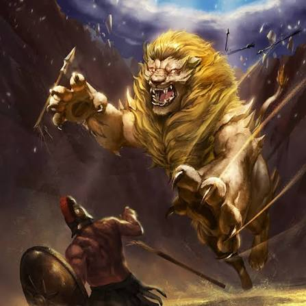
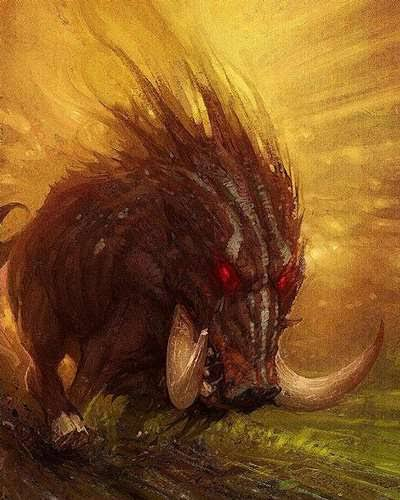
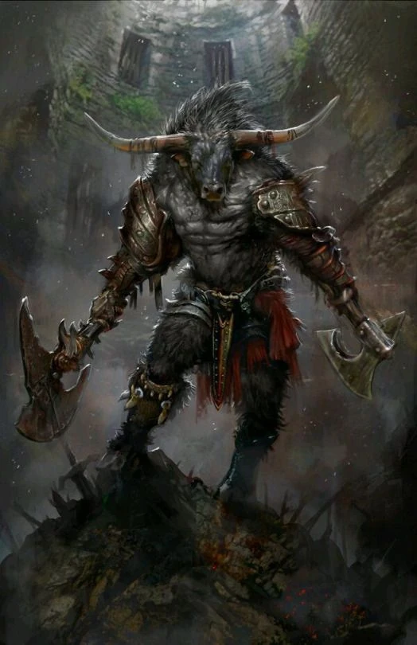
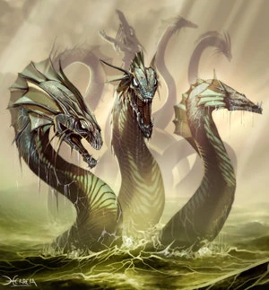
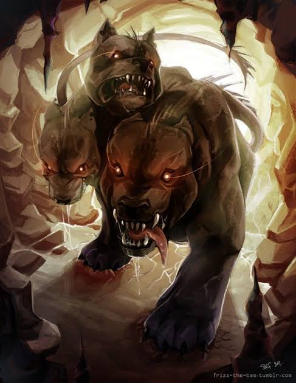

Gostaria de saber mais sobre as criaturas e monstros da Mitologia Grega?
Adquira o livro físico ou virtual disponível em nosso site através da sessão de produtos


Um leão gigantesco de pelagem dourada impenetrável a qualquer lâmina, flecha ou lança humana. Suas garras eram mais afiadas que espadas e podiam cortar qualquer armadura.

Um javali descomunal e extremamente agressivo, conhecido por destruir plantações, arrancar árvores pela raiz e atacar qualquer um que cruzasse seu caminho com suas presas gigantescas.

Uma criatura monstruosa com o corpo musculoso de um homem e a cabeça feroz de um touro bravo. Ele se alimentava de carne humana e vagava pelas intermináveis curvas do labirinto construído pelo arquiteto Dédalo.

Uma serpente aquática gigantesca e aterrorizante, com dezenas de cabeças. Além de sua força brutal, seu hálito e seu sangue eram altamente venenosos, capazes de matar qualquer um apenas com o cheiro.

Uma serpente aquática colossal com múltiplas cabeças, hálito venenoso e sangue mortal. Para cada cabeça cortada, duas novas cresciam em seu lugar, tornando a criatura aparentemente invencível em combate.
Adquira o livro físico ou virtual disponível em nosso site através da sessão de produtos